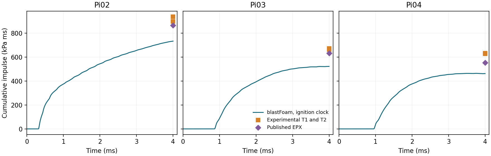

A03 已归档原生仿真。冲量 MAPE 实测重复试验 22.79%（6 项） · 论文 EPX 16.38%（3 项）。
逐点扣除 101.3 kPa 基线，保留超压正负号，在起爆时钟 0–4 ms 对原生样本作梯形积分。 原文以最近的测点统一对齐实验和 EPX 波前。独立仿真沿用原生起爆时钟。 冲量属于运行后补充诊断，峰值入选判据单独记录。表 4 的 T1 和 T2 分别对应原始试次 1 和 4。原始试次 2 保留在已审核的峰值资料中。

| 测点 | 参考 | 参考 kPa·ms | 仿真 kPa·ms | APE |
|---|---|---|---|---|
| Pi02 | EPX | 866 | 734.15 | 15.23% |
| Pi02 | T1 | 898 | 734.15 | 18.25% |
| Pi02 | T2 | 938 | 734.15 | 21.73% |
| Pi03 | EPX | 633 | 522.58 | 17.44% |
| Pi03 | T1 | 664 | 522.58 | 21.30% |
| Pi03 | T2 | 672 | 522.58 | 22.24% |
| Pi04 | EPX | 554 | 462.71 | 16.48% |
| Pi04 | T1 | 628 | 462.71 | 26.32% |
| Pi04 | T2 | 633 | 462.71 | 26.90% |